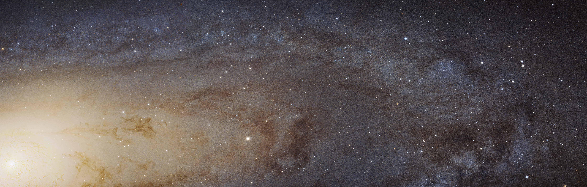
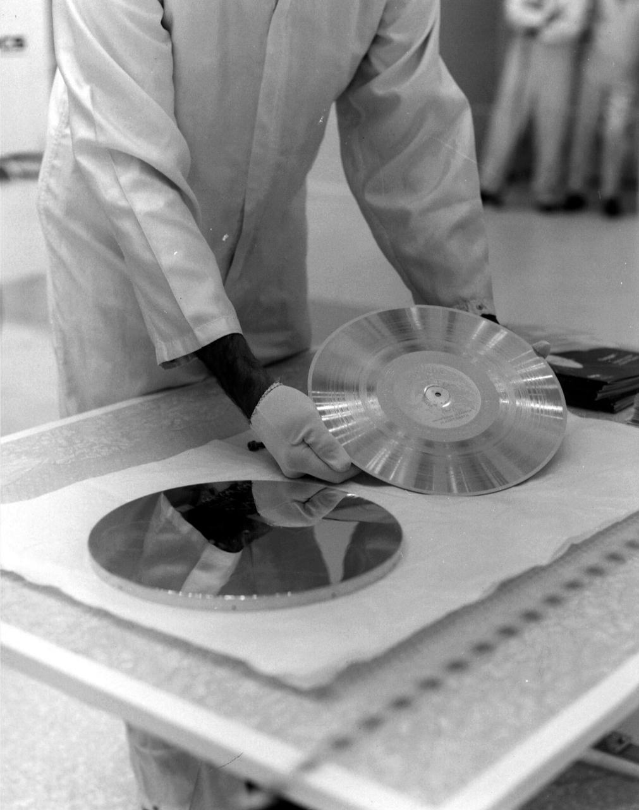

Scroll down to ignite the engines and leave Earth behind; hear the emotional stories of the spacecraft left behind on the Moon and Mars.
Standing 58 meters tall between the 105-meter lightning masts, Atlas V 411 awaits ignition. Scroll down to ignite the engines. (Source: NASA SVS #12716 / NSSDCA 2016-055A)

Every spacecraft launched on a one-way ticket to expand human knowledge. Rotate the 3D models on the right, inspect their identity cards, or listen to their audio logs.
NASA engineers built these explorers for worst-case scenarios. Nearly all of them outlived their planned operational lifespans by orders of magnitude.
Drag the slider left and right to compare authentic NASA photographs showing how Martian dust gradually blanketed InSight's solar arrays over 1,200 sols.
Aboard Voyager 1 — now 24.5 billion km away — the Golden Record carries greetings in 55 languages. Recorded by Prof. Peter Ian Kuniholm at Cornell University, the Turkish message has echoed among the stars for 48 years:
“Sayın Türkçe bilen arkadaşlarımız, sabah şerifleriniz hayrolsun!” (“Dear Turkish-speaking friends, may the honors of the morning be upon you!”)

Switch between the Moon and Mars, toggle NASA orbital imagery layers, and fly directly to the craters and plains where these silent explorers rest.
Take the 4-question challenge about the silent space ambassadors you just met and earn your Junior Astronaut Heritage Badge!
Every date (including UTC vs. local time-zone distinctions), mass measurement, active mission duration (Sols/Years), launch broadcast, deep-space mosaic, and planetary map layer on this platform is grounded in official NASA & JPL open-data archives.
2016-055A).
svs.gsfc.nasa.gov/12716 ↗